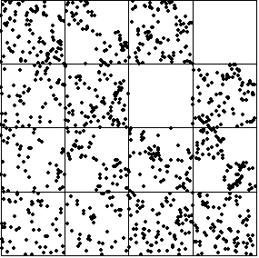
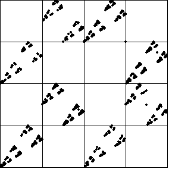

To look for evidence of synchronizaton in the average of coupled logistic maps, we use the driven IFS. If any of these looks like the IFS driven by a single logistic map, we will look in more detail.
For comparison, the IFS driven by a single
|
 |  |
Return to Synchronization of Chaotic Processes.